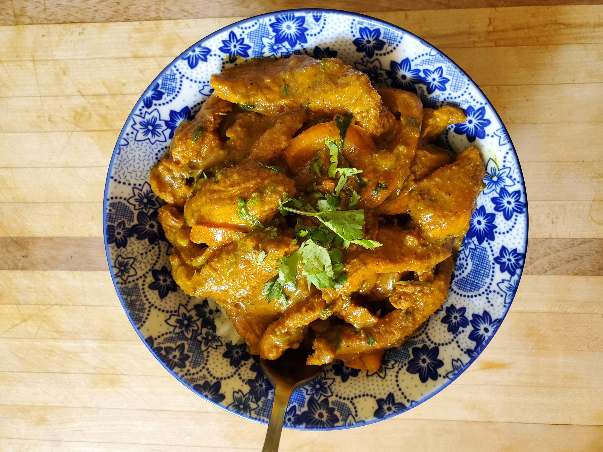

Chicken Curry

Description
This is a cheap recipe with a ton of flavors! You can serve the chicken curry on a bed of basmati rice or the rice of your choice.
Bon appétit !
Ingredients
- 3 chicken breasts
- 1 onion
- 5 garlic cloves
- 1 chunk of fresh ginger
- 1 green bell pepper
- 1 can of coconut milk
- 1 lemon
- soy sauce
- olive oil
- garlic powder
- onion powder
- curry powder
- coriander powder
- salt
- pepper
- fresh cilantro
Instructions
- Dice the onion.
- Grate the garlic.
- Cut the chicken breasts into strips.
- Put the garlic and the chicken in a mixing bowl.
- Drizzle a bit of olive oil.
- Add all the spices.
- Mix and reserve.
- In a pan with a bit of olive oil, cook the diced onion.
- Add the chicken mix into the pan and continue cooking.
- When the chicken is cooked through, add the coconut milk to the pan and let it reduce until you have a nice creamy sauce consistency.
- Add the lemon juice to the pan and turn off the heat.
- This is optional, but you can add chopped cilantro to your dish.